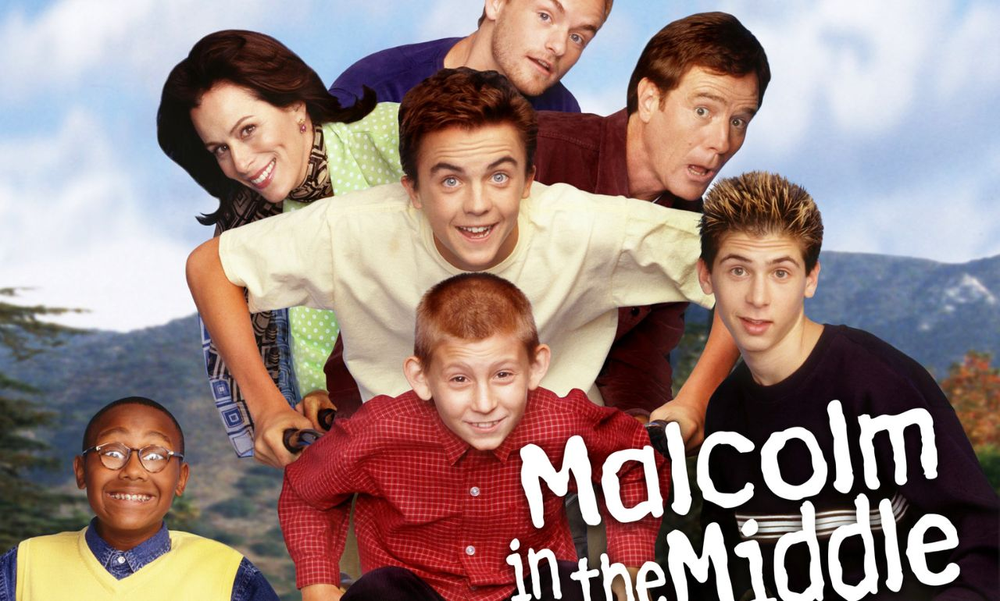

Temporada / Cap.
T02 · E20

Cuatro series, cuatro ángulos de la institución familiar
Sinopsis
El audiovisual como diagnóstico de la institución y dinámica familiar
Las series
Audiovisualmente, se utiliza el split screen tanto como truco cómico, como una representación de los subsistemas familiares y cómo la dinámica de grupo cambia según los integrantes presentes.
Se muestra cómo el comportamiento de los hijos está condicionado por la figura de autoridad en turno. La trama se divide para poder marcar el contraste entre el modelo de Lois (límites rígidos, control absoluto y estrés constante) con el modelo de Hal (caos permisivo, evasión de responsabilidades y cierta inmadurez emocional).
Las tres tramas (la supervisión de Dewey, la obsesión de Hal por marcar 10 chuzas y la rivalidad romántica entre Malcolm y Reese) van mutando. Con Lois, el conflicto radica en la represión y la rebelión; mientras que con Hal, el conflicto está en la anarquía y la falta de supervisión. La cinematografía permite observar a la familia como un ecosistema reactivo que cambia de forma si extraes, insertas o mueves a un miembro en específico.
El campo semántico del espacio exterior funciona como alegoría visual para hablar de la infancia. En términos de dinámica familiar, el episodio explora el apego seguro y la transición hacia una independencia sana.
Bingo intentando dormir sola en su cama representa un tipo de salto al vacío a la individualización. El espacio exterior representa vastedad, frío y soledad, un combo perfecto de la vulnerabilidad infantil frente a la separación.
El contraste está en cuando la madre aparece como Sol. En la dinámica de esta familia, los padres funcionan como anclas emocionales. El Sol da calor y estabilidad. Bingo entonces aprende que puede orbitar lejos (dormir sola), sabiendo que el centro de su universo sigue ahí para calentarla cuando tiene frío. Se puede decir que es una excelente representación de la dimensión afectiva.
En este punto, podemos explorar aún más la dimensión psicológica. Tenemos una sátira sobre cómo los traumas y los mecanismos de control se heredan de padres a hijos, formando ciclos casi imposibles de romper.
Michael se considera a sí mismo como la antítesis de su padre, pero al intentar darle una lección a George Michael utilizando el engaño, demuestra nada más que ha internalizado el lenguaje manipulador con el que fue aleccionado él. El giro final (el abuelo dándole una última lección al hijo sobre no dar lecciones al nieto) ejemplifica un sistema familiar tóxico, o por lo menos, desconfiado.
Para este último ejemplo, me gustaría ahondar en un análisis con lente político y sociológico. La serie nace como una antítesis directa a las familias tradicionales norteamericanas, argumentablemente mostrando cómo el estrés del capitalismo puede erosionar los vínculos internos.
El padre no es un patriarca sabio, es un trabajador alienado y resentido. Se muestran imágenes donde reparte dinero literalmente a su familia, reduciendo el papel de figura paterna a un cajero automático. La familia no funciona como refugio contra el estrés del exterior, se vuelve una extensión del mismo.
El capítulo muestra un entorno sociopolítico específico. Peggy cumple el estereotipo de ama de casa, pero también lo pervierte rechazando el trabajo doméstico y asume un rol de consumidora hiperbólica. Esto crea un entorno familiar sumamente transaccional (sexo y afecto condicionados al dinero). Aquí el medio audiovisual diagnostica un tipo de contraejemplo del sueño americano para la clase trabajadora, donde los roles tradicionales de género dejan de funcionar e incluso se convierten en cadenas que frustran a todos.
Las series no se inventan familias: las radiografía.
Fragmentos
Fichas técnicas
Malcolm in the Middle
Bluey
Arrested Development
Married with Children
Conclusión
El análisis conjunto de estas obras demuestra cómo el medio audiovisual funciona como un espejo de la institución familiar. Ya sea a través del poder, el apego infantil, las herencias tóxicas o la alienación económica, cada serie trasciende el entretenimiento y se convierte en un punto de análisis de la condición humana. Estudiar la familia en los audiovisuales es explorar un componente fundamental de nuestra propia estructura social.
Actividad anterior
El Color del Duelo